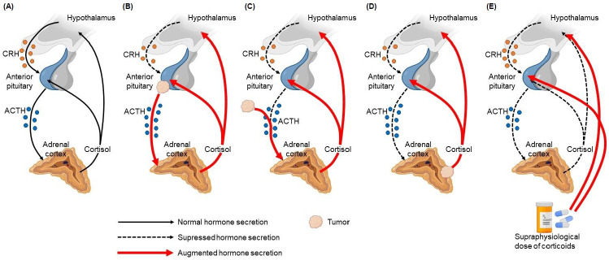
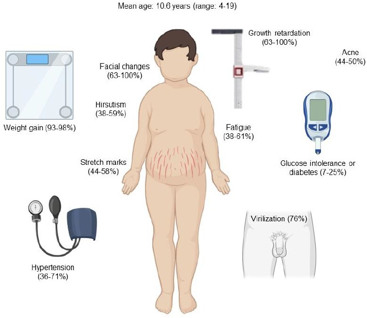
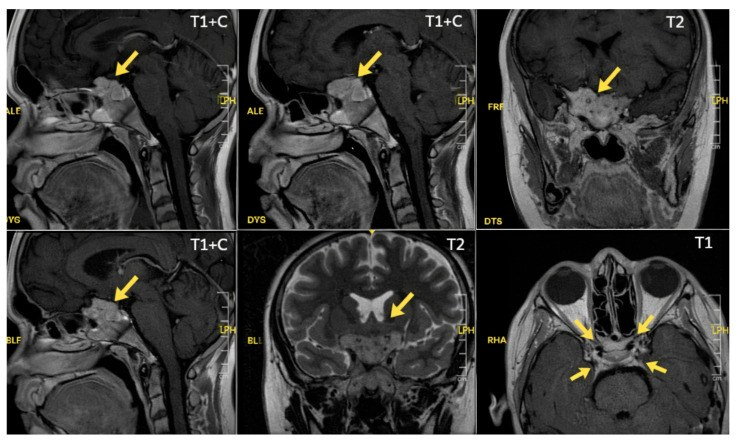
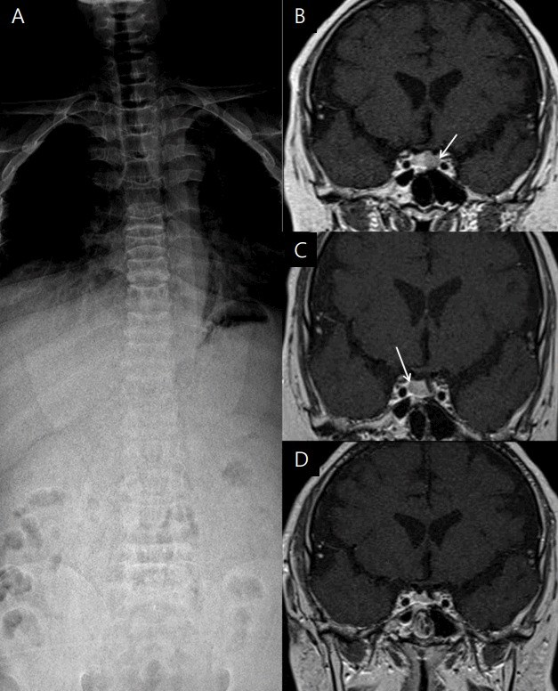

1699 — Bệnh Cushing ở trẻ em: chậm tăng trưởng + tăng cân, MRI 3T động học, BIPSS theo tuổi và tăng trưởng sau lui bệnh / Pediatric Cushing disease
Tags: pattern:cushing pattern:microadenoma-tuyen-yen pattern:cham-tang-truong vung:tuyen-yen vung:ho-yen vung:cot-song protocol:MRI-3T-dong-hoc protocol:BIPSS
Mức chắc chắn (certainty): tổng hợp y văn (literature synthesis) — tổng quan có hệ thống về Cushing do tuyến yên ở trẻ (Concepción-Zavaleta MJ và cộng sự, Ann Pediatr Endocrinol Metab 2023, PMC10329946) + 2 ca nguyên văn có ảnh (PMC13029999: nam 13 tuổi 8 tháng, u 3 × 2 mm; PMC5642078: nam 17 tuổi, gãy 3 đốt sống) + bài tổng quan cùng hệ 1696/1694.
Câu chốt: Ở trẻ, dấu hiệu sớm nhất không phải mặt tròn hay rạn da mà là đường cong tăng trưởng đổi hướng: tăng cân nhanh + tốc độ cao gần như bằng 0. Vì vậy câu hỏi hình ảnh không phải "có u không" mà là "đứa trẻ này có mất chiều cao so với kênh của nó không" — sau đó mới là MRI 3T động học (chỉ thấy u ở 16–71% ca) và BIPSS (khi MRI âm và đã chứng minh ACTH phụ thuộc trung ương).
1. Tổng quan bệnh học – cơ chế hình ảnh
- Dịch tễ (số phải nhớ): Cushing nội sinh 0,7–2,4/1 triệu người/năm, chỉ ~10% ca mới ở trẻ em; Cushing do tuyến yên (Cushing disease — CD) ở trẻ có tỉ lệ mắc 0,89–1/1 triệu trẻ/năm và chiếm 75–80% Cushing nội sinh. Ở trẻ < 7 tuổi**, nguyên nhân **thượng thận** lại thường gặp hơn u tuyến yên; **> 7 tuổi thì CD chiếm ưu thế. Tuổi trung bình trong một tổng quan lâm sàng: 10,6 tuổi (4–19).
- TẠI SAO tăng cân mà KHÔNG cao (cơ chế mô học): cortisol ức chế trục GH–IGF-1 và trực tiếp chống tăng sinh tế bào sụn sụn tiếp hợp (ức chế chondrocyte ở vùng tăng trưởng), trong khi vẫn tăng tân tạo mỡ và đề kháng insulin → cân tăng, tốc độ cao giảm, tuổi xương chậm so với tuổi thực. Ca PMC5642078: 17 tuổi, cao 149,5 cm (−4,1 SDS), tăng 23 kg trong 4 năm mà không cao thêm, tuổi xương chậm 2 năm.
- TẠI SAO MRI hay âm tính (vật lý): u corticotroph ở trẻ thường < 6 mm, giảm tín hiệu T1, và ngấm thuốc chậm hơn nhu mô tuyến yên lành (tuyến yên có hệ cửa mạch mạnh) → trên chuỗi động học sau tiêm, u hiện giảm tín hiệu so với nhu mô ở thì sớm, rồi đẳng tín hiệu. Vì thế MRI thường quy chỉ thấy u ở 16–71% ca; lát cắt ≤ 1,5 mm ở 3T là điều kiện tối thiểu.
- TẠI SAO xương gãy khi chỉ "béo": cortisol giảm tạo xương (ức chế osteoblast) và tăng hủy xương (tăng RANKL, giảm hấp thu canxi) → mật độ xương giảm nhanh; ca PMC5642078 có T-score −4,9 ở cột sống thắt lưng và −2,7 ở háng, kèm xẹp T9, L2, L3. Trên X-quang: loãng xương lan tỏa + xẹp thân đốt — hình ảnh "người già" ở một thiếu niên.
- Sinh hóa chốt: cortisol tự do nước tiểu 24 giờ > 70 µg/m²/24 giờ (193 nmol/24 giờ); cortisol huyết tương nửa đêm > 4,4 µg/dL; cortisol nước bọt nửa đêm < 1,45 ng/mL là bình thường (Se 100%, Sp 95%); sau 1 mg dexamethasone (25 µg/kg, tối đa 1 mg) cortisol ≥ 1,8 µg/dL = không ức chế.
- Vì sao phải định vị chứ không chỉ chẩn đoán: ACTH > 29 pg/mL → phụ thuộc ACTH (tuyến yên hoặc lạc chỗ); ACTH < 5 pg/mL** → phụ thuộc thượng thận. Test CRH: cortisol tăng **> 20% và ACTH tăng ≥ 35%; test dexamethasone liều cao (80–120 µg/kg, tối đa 8 mg) giảm cortisol ≥ 20% tách tuyến yên khỏi lạc chỗ với Se 97,5%/Sp 100% — nhưng ở trẻ vẫn phải xác nhận bằng MRI/BIPSS vì test không định vị được bên.
2. Mẫu hình + chẩn đoán phân biệt theo vị trí (Gamut)
- Theo trục (bắt buộc phân nhánh trước khi nghĩ tới u):
- Phụ thuộc ACTH: u tuyến yên (CD — phổ biến nhất ở trẻ > 7 tuổi); ACTH lạc chỗ (carcinoid phế quản/tuyến ức, NET tụy, u nguyên bào thần kinh, Wilms); CRH lạc chỗ (rất hiếm).
- Không phụ thuộc ACTH: adenoma vỏ thượng thận (bài 194), ung thư vỏ thượng thận (bài 193), PPNAD/AIMAH, McCune-Albright (tăng sản nốt hai bên).
- Ngoại sinh (thường gặp nhất ở trẻ nói chung): uống/hít/bôi/thuốc nhỏ mắt/tiêm khớp — luôn loại trừ trước khi chụp (bài 1694).
- Theo hình thái tuyến yên trên MRI: ổ < 6 mm (giá trị định vị thấp nhất → cân nhắc BIPSS); 6–10 mm microadenoma; ≥ 10 mm macroadenoma (xâm lấn xoang hang, chèn giao thoa thị); tuyến yên bình thường/to đều = tăng sản do CRH hoặc do suy giáp nguyên phát.
- Theo bụng (khi ACTH thấp): một khối thượng thận (adenoma/ACC) vs hai thượng thận teo (ngoại sinh) vs hai bên to không đều, có nốt nhỏ (PPNAD) — nhánh bình thường 4,1–4,9 mm, thân 7,2–8,8 mm (n = 586, bài 1694).
- Gamut "béo + thấp" ở trẻ (không phải Cushing): béo đơn thuần (cao bình thường hoặc vượt kênh, tuổi xương đi trước), suy giáp (chậm cao + chậm tuổi xương nhưng không tăng cân nhanh kiểu Cushing), thiếu GH, bệnh celiac/IBD, loạn sản xương, chậm phát triển thể chất – dậy thì muộn (chiều cao vẫn song song kênh).
- Gợi nhớ "GROWTH": Growth chart trước tiên, Rạn da/tím + mặt tròn, Obesity trung tâm, Weakness cơ gốc chi, Tuổi xương chậm, Huyết áp cao + đường huyết rối loạn.

Sơ đồ: (A) trục bình thường; (B) Cushing do u tuyến yên (ACTH cao, cortisol cao, tăng sản thượng thận hai bên); (C) ACTH lạc chỗ; (D) u thượng thận (ACTH bị ức chế); (E) Cushing ngoại sinh (thượng thận teo). Nguồn: Concepción-Zavaleta MJ và cộng sự, Ann Pediatr Endocrinol Metab 2023;28(2):87–97, PMCID PMC10329946, CC BY-NC 4.0.3. Bảng so sánh phân biệt (ma trận đối chiếu)
| Thực thể (entity) | Hình ảnh điển hình | Chốt vào (rule-in) | Chốt loại (rule-out) | Gợi ý xác nhận |
|---|---|---|---|---|
| Cushing do u tuyến yên ở trẻ | U < 6 mm, giảm T1, giảm tín hiệu thì động học sớm; hai thượng thận to đều; tuổi xương chậm, loãng xương | Chậm cao + tăng cân + UFC cao + ACTH > 29 pg/mL + ức chế ≥ 20% với dex liều cao | MRI âm không loại trừ (chỉ thấy u 16–71%); BIPSS không gradient mới loại trừ mạnh | MRI 3T động học ≤ 1,5 mm; BIPSS; mô bệnh sau TSS |
| ACTH lạc chỗ | Tuyến yên bình thường; u phổi/tuyến ức/tụy/thượng thận; thượng thận rất to; hạ kali, tăng sắc tố | ACTH rất cao + hạ K + ổ ngoài sọ + BIPSS không gradient | Có gradient trung ương rõ và ổ tuyến yên khớp bên → loại trừ | CT ngực–bụng, 68Ga-DOTATATE, BIPSS |
| U vỏ thượng thận (adenoma/ACC) | Một khối thượng thận, đối bên teo; trẻ nhỏ hơn, nam hóa rõ | ACTH < 5 pg/mL + một khối + đối bên teo | ACTH cao + hai bên to đều → loại trừ | CT bụng có cản quang, mô bệnh (bài 193/194) |
| PPNAD / AIMAH | Thượng thận kích thước gần bình thường hoặc nhỏ, nhiều nốt nhỏ, có thể loạn sản xương dạng sợi | ACTH thấp + nhiều nốt nhỏ hai bên + bệnh cảnh gia đình (Carney) | Một khối đơn độc → loại trừ | CT/MRI bụng lát mỏng, gen PRKAR1A |
| Cushing ngoại sinh | Hai thượng thận teo đều, không khối; có thể loãng xương nặng | Tiền sử corticoid (kể cả hít/bôi) + ACTH bị ức chế + teo hai bên | Không phơi nhiễm + ACTH cao → loại trừ | Hỏi thuốc kỹ, cortisol sáng, test ACTH |
| Béo đơn thuần | Chiều cao bình thường hoặc trên kênh, tuổi xương đi trước, không loãng xương | Tăng cao song song/không giảm tốc độ cao + tuổi xương ≥ tuổi thực | Tốc độ cao giảm + tuổi xương chậm + UFC cao → loại trừ | Theo dõi biểu đồ tăng trưởng 6–12 tháng |

*Tuổi trung bình 10,6 (4–19): tăng cân 93–98%, chậm tăng trưởng 63–100%, thay đổi mặt 63–100%, nam hóa 76%, rạn da 44–58%, tăng huyết áp 36–71%, rối loạn dung nạp glucose/đái tháo đường 7–25%. Nguồn: Concepción-Zavaleta MJ và cộng sự, Ann Pediatr Endocrinol Metab 2023, PMCID PMC10329946, CC BY-NC 4.0.*Ba dấu hiệu hình ảnh quyết định (đọc đúng thứ tự)
- Biểu đồ tăng trưởng là "modality" đầu tiên: vẽ lại chiều cao/theo tuổi và cân/theo chiều cao; tìm bẻ kênh đi xuống của chiều cao trong khi BMI đi lên. Đây là dấu nhạy nhất và rẻ nhất — bỏ qua bước này là lý do chẩn đoán muộn 1,7–2,5 năm.
- Tuổi xương (X-quang bàn tay trái): chậm so với tuổi thực (ca điển hình chậm 2 năm) — ngược với béo đơn thuần (tuổi xương đi trước).
- Cột sống + DXA: đau lưng ở trẻ béo có Cushing = phải chụp cột sống, không được coi là "đau cơ do béo".
4. Protocol chụp + hệ phân độ/điểm chuẩn hóa
4.1. Chẩn đoán sinh hóa trước, chụp sau (thứ tự không được đảo)
- Bước 1 — chứng minh tăng cortisol: 3 mẫu UFC 24 giờ liên tiếp (biến thiên trong cùng bệnh nhân ~50%, nên 1 mẫu âm không loại trừ); hoặc cortisol nửa đêm; hoặc test 1 mg dexamethasone qua đêm.
- Bước 2 — ACTH: > 29 pg/mL = phụ thuộc ACTH; < 5 pg/mL = phụ thuộc thượng thận.
- Bước 3 — định vị: MRI tuyến yên 3T, lát ≤ 1,5 mm, coronal T1 sau tiêm động học (15–30 giây/thì trong 60–90 giây đầu) + T2 coronal; nếu MRI âm/không kết luận/u < 6 mm → BIPSS.
4.2. BIPSS ở trẻ — ngưỡng và khác biệt so với người lớn
- Ngưỡng: ACTH xoang đá : ngoại vi (IPS:P) > 2 trước kích thích và > 3 sau CRH; lấy mẫu 3, 6, 10 phút sau CRH.
- Desmopressin 10 µg IV là thay thế khi không có CRH — độ nhạy BIPSS ở trẻ thấp hơn người lớn nhưng tăng rõ sau desmopressin.
- Định bên: gradient giữa hai xoang ≥ 1,4 mới đủ gợi ý bên cho phẫu thuật viên; kiểm tra đặt catheter bằng prolactin (IPS:P prolactin ≥ 1,8) — nếu thấp hơn thì kết quả âm là giả do đặt sai, không phải do ACTH lạc chỗ.
4.3. Điều trị — mốc thời gian ảnh hưởng tới hình ảnh theo dõi
- TSS (xuyên bướm) là lựa chọn đầu tay: lui bệnh sớm 94,8% trong loạt 96 trẻ; tái phát 21,9%; tổng quan gộp 80% lui bệnh (6.695 bệnh nhân, không khác biệt nội soi/vi phẫu về lui bệnh, nhưng nội soi ít tái phát hơn ở macroadenoma).
- Tiêu chuẩn lui bệnh: cortisol sáng sau mổ < 1,8 µg/dL (đo ≥ 2 lần trong 2 tuần, ngày 5 và 14) — suy thượng thận sau mổ là dấu hiệu TỐT, không phải biến chứng cần tránh.
- Xạ trị: chỉ khi mổ không khả thi/tái phát; liều 45 Gy/25 phân liều (dải chung 8–45/50 Gy). Loạt 7 trẻ: 100% kiểm soát, biến chứng chính thiếu GH; loạt 8 trẻ: 50% khỏi, 5/8 suy sinh dục, tất cả không đạt chiều cao đích → xạ trị là nguyên nhân mất chiều cao phải tư vấn trước.
- Thuốc (khi chờ mổ/không mổ được): ketoconazole 200–800 mg/ngày (độc gan 0,5–4,2%, kiểm tra men gan sau 3–4 tuần); metyrapone 720–1.500 mg/ngày; mitotane khởi đầu 1 g/ngày; mifepristone tối đa 20 mg/kg/ngày (không dùng cortisol để theo dõi).
- Cắt thượng thận hai bên: biến chứng suy thượng thận và hội chứng Nelson tới 25% ở trẻ — cần MRI tuyến yên định kỳ sau mổ.
4.4. Theo dõi sau lui bệnh (phần quyết định tiên lượng)
- Tăng trưởng: dù lui bệnh hoàn toàn, nghiên cứu tiến cứu 13 trẻ cho thấy mất −0,8 SD chiều cao người lớn và +0,9 SD cân/BMI; tăng bắt kịp chỉ một phần — vì vậy chẩn đoán sớm chính là điều trị chiều cao.
- Huyết áp: huyết áp tâm trương/trung bình về bình thường trong 3 tháng, tâm thu tới 1 năm; tới 20% vẫn còn tăng huyết áp sau khi cortisol bình thường.
- Xương: mật độ xương hồi phục một phần sau điều trị (35 trẻ) — vẫn phải chụp/DXA lại, không "hết bệnh là hết loãng xương".
- Tái phát 7–25% ở 5/10/15 năm → MRI + xét nghiệm định kỳ; yếu tố nguy cơ: tuổi khởi phát lớn hơn, xâm lấn xoang hang/màng cứng, đột biến USP8 (gặp 31–63% adenoma corticotroph ở trẻ), không tìm thấy u lúc mổ, thay thế glucocorticoid < 6 tháng.
flowchart TD
A["Trẻ tăng cân nhanh + tốc độ cao giảm"] --> B["Vẽ lại biểu đồ tăng trưởng + tuổi xương"]
B --> C{"BMI tăng và chiều cao bẻ kênh xuống?"}
C -->|Không| D["Béo đơn thuần: theo dõi 6-12 tháng"]
C -->|Có| E["Loại trừ corticoid ngoại sinh"]
E --> F["UFC 24h x3 + cortisol nửa đêm + test 1 mg dexamethasone"]
F --> G{"Cortisol không ức chế?"}
G -->|Không| D
G -->|Có| H["ACTH: trên 29 pg/mL hay dưới 5 pg/mL"]
H -->|Dưới 5| I["CT/MRI bụng: một khối hay hai bên teo"]
H -->|Trên 29| J["MRI tuyến yên 3T động học, lát 1,5 mm"]
J --> K{"Thấy u từ 6 mm?"}
K -->|Có| L["TSS xuyên bướm"]
K -->|Không| M["BIPSS: IPS:P trên 2 và trên 3 sau CRH"]
M --> N["TSS + kiểm tra cortisol sáng ngày 5 và 14 dưới 1,8 µg/dL"]
L --> N
5. Biến thể bình thường và cạm bẫy
- "Giả adenoma" trên MRI trẻ: ổ giảm tín hiệu nhỏ có thể là nang pars intermedia, vùng tuyến yên không đều, hoặc hiệu ứng thể tích — ở trẻ, u < 3 mm trên một chuỗi không động học không đủ để mổ; phải khớp với sinh hóa và bên với BIPSS.
- BIPSS âm khi đang "pha thấp": nếu bệnh nhân đang ở giai đoạn cortisol bình thường (thể chu kỳ — bài 1700), gradient âm không loại trừ u tuyến yên. Luôn ghi lại cortisol/ACTH tại thời điểm lấy mẫu.
- Cortisol sau mổ "bình thường" có thể là pha trũng của bệnh chu kỳ, không phải lui bệnh — cần theo dõi dài, không giảm liều hydrocortisone quá nhanh.
- Suy thượng thận cấp sau mổ (buồn nôn, hạ HA, hạ Na) là biến chứng đe dọa tính mạng trong 1–2 tuần đầu; phải có kế hoạch liều stress và giáo dục gia đình.
- Gãy đốt sống bị đọc là "chấn thương" ở trẻ béo: nếu không có chấn thương tương xứng, phải nghĩ Cushing và đo cortisol — ca PMC5642078 đã bị bỏ sót 4 năm vì quy cho béo và chậm phát triển.
- Đừng dùng MRI để "loại trừ" Cushing: MRI âm ở 29–84% trẻ (chỉ thấy 16–71%); câu đúng là "MRI âm + sinh hóa dương → BIPSS", không phải "MRI âm → không Cushing".
- Sai lầm thoả mãn tìm kiếm: thấy u tuyến yên rồi dừng, không kiểm tra thượng thận hai bên — ở trẻ < 7 tuổi và trong PPNAD, tổn thương thượng thận mới là nguồn.
6. Tự lượng giá — Blind Quiz ngay trên trang tĩnh
Ca 1 — Nam 13 tuổi 8 tháng, cao 5th percentile, tốc độ cao 0,8 cm/năm.

- Gợi ý: tăng cân 2 năm, không đau đầu, không dậy thì sớm; cortisol tự do nước tiểu và ACTH tăng.
- Câu hỏi: ổ bất thường nằm ở đâu, kích thước bao nhiêu? Vì sao phải chụp động học? Nếu MRI âm thì bước tiếp theo?
Bấm để hiện đáp án (findings + chẩn đoán)
- Dấu hiệu: ổ giảm tín hiệu T1, tăng nhẹ T2, ở bờ trái tuyến yên, kích thước ~3 × 2 mm (mũi tên); không xâm lấn xoang hang, không chèn giao thoa thị.
- Chẩn đoán: microadenoma corticotroph (bệnh Cushing) — u nhỏ nên chỉ hiện rõ khi so từng thì động học sau tiêm.
- Xử trí trong ca: TSS nội soi, sau mổ đái tháo nhạt trung ương thoáng qua + suy thượng thận thứ phát, trục HPA hồi phục sau 1 năm.
- Nguồn ảnh: Ontoria Betancort MC và cộng sự, Reports (MDPI) 2026;9(1):70, PMCID PMC13029999, CC BY 4.0.
Ca 2 — Nam 17 tuổi, đau lưng, béo trung tâm, 4 năm không cao thêm.

- Gợi ý: cao 149,5 cm (−4,1 SDS), BMI 28,5 kg/m² (3,0 SDS), không chấn thương.
- Câu hỏi: có mấy đốt sống bị xẹp? Dấu hiệu X-quang nền là gì? Chẩn đoán phân biệt của "xẹp đốt sống ở thiếu niên"?
Bấm để hiện đáp án (findings + chẩn đoán)
- Dấu hiệu: loãng xương lan tỏa + xẹp T9, L2, L3; DXA T-score −4,9 (cột sống) và −2,7 (háng). MRI tuyến yên: ổ giảm tín hiệu nhỏ ở tuyến yên (B, C), sau mổ không còn u (D).
- Chẩn đoán: bệnh Cushing do u tuyến yên — loãng xương do cortisol là nguyên nhân gãy, không phải chấn thương. Ca này còn có nhiều adenoma tuyến yên phát hiện ở lần mổ thứ hai.
- Bài học: trẻ béo + gãy xẹp đốt sống không chấn thương → đo cortisol trước khi quy cho "đau cơ".
- Nguồn ảnh: Song JY và cộng sự, Ann Pediatr Endocrinol Metab 2017;22(3):197, PMCID PMC5642078, CC BY-NC 4.0.
Ca 3 — Trẻ 9 tuổi, béo trung tâm, mặt tròn, rạn da tím; cần giải thích cho gia đình vì sao phải chụp tuyến yên.
- Câu hỏi: hình nào là Cushing do tuyến yên? Vì sao thượng thận lại to ở hình đó, còn ở hình E lại teo?
Bấm để hiện đáp án
- Hình B = Cushing do u tuyến yên: ACTH tăng → tăng sản thượng thận hai bên → cortisol tăng, mất nhịp ngày đêm.
- Hình E = Cushing ngoại sinh: cortisol ngoài ức chế ACTH → thượng thận teo hai bên (bài 1694).
- Hình C = ACTH lạc chỗ (không có u tuyến yên), D = u thượng thận (ACTH bị ức chế nhưng một bên to, bên kia teo).
- Nguồn ảnh: Concepción-Zavaleta MJ và cộng sự, Ann Pediatr Endocrinol Metab 2023, PMCID PMC10329946, CC BY-NC 4.0.
Bài liên quan chéo
- 1696 – Bệnh Cushing do u tuyến yên ở người lớn: MRI 3T động học, BIPSS, Nelson
- 1700 – Hội chứng Cushing chu kỳ: dao động cortisol và bẫy xét nghiệm âm giả
- 1694 – Cushing do glucocorticoid ngoại sinh: thượng thận teo hai bên
- 1697 – Hội chứng tăng đông của Cushing: VTE chu phẫu
- 194 – Cushing do u vỏ thượng thận ở trẻ: chuẩn bị chu phẫu
- 193 – Ung thư vỏ thượng thận ở trẻ: nam hóa/Cushing
- 600 – Tổng quan hệ Nhi khoa
Ảnh
- Ảnh lấy từ PMC (Europe PMC/PMC OA), đúng file figure gốc; giấy phép từng ảnh trong
images/CREDITS.md. - Không tạo composite: 2 ảnh thuộc CC BY-NC (không ND nhưng khác bài/chuỗi xung), giữ nguyên bản để không sai lệch chú thích gốc.
- Số liệu chỉ trích (không dùng ảnh): PMC10329946, PMC13029999, PMC5642078, PMC10159280 — xem
sources.md.
Không dùng để chẩn đoán độc lập khi chưa có người hướng dẫn.